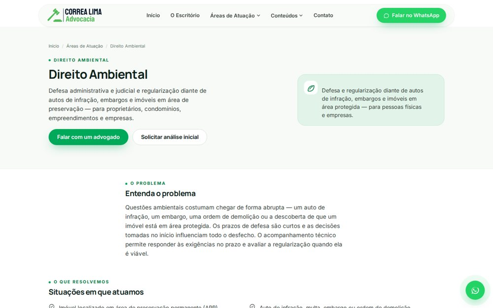
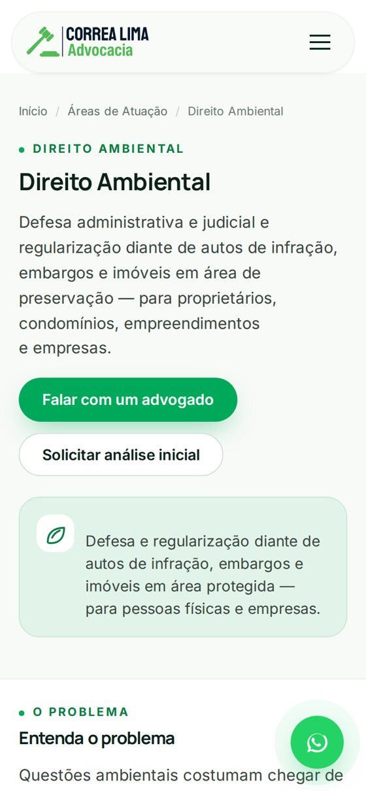

Corrêa Lima Advocacia · abandono da altura por viewport em favor de uma altura editorial por proporção. Sem tocar na Home, no conteúdo, em URLs ou SEO.
Medi /areas-de-atuacao/direito-ambiental/ em várias alturas de tela. A causa real dos dois incômodos:
| Tela | Hero (antes) | Vazio abaixo do card | Faixa da 2ª seção |
|---|---|---|---|
| 1366×768 | 770 px | — | oculta |
| 1536×864 | 866 px | — | oculta |
| 1920×1080 | 960 px (limitado) | ~388 px | aparece +42 px |
Ou seja: a altura era amarrada à viewport (min-height: calc(100dvh − cabeçalho), com teto de 60 rem) e o conteúdo era centralizado verticalmente. Em telas altas isso deixava um grande vazio abaixo do card e ainda deixava escapar a faixa da seção seguinte — exatamente o "alto demais / vazio" que você apontou.
Conforme solicitado, abandonei a altura por viewport. O Hero das áreas (e subáreas) agora tem altura editorial definida por padding, com o conteúdo alinhado ao topo:
min-height, 100svh/dvh, o calc() e a centralização vertical.clamp(2rem, 1.5rem + 1.7vw, 3.25rem), base clamp(2.75rem, 2rem + 2.6vw, 4.5rem) — um pouco mais embaixo para "assentar" o bloco.Aplicado de forma compartilhada nos dois componentes-base das áreas (PillarPage = .p-hero e SubPage = .s-hero), sem regra fixa de altura.


Você pediu duas coisas ao mesmo tempo: (a) um Hero menor e elegante, sem esticar para a viewport; e (b) que a seção seguinte não apareça na primeira tela.
Como o conteúdo do Hero é naturalmente curto (~350 px), essas duas metas se opõem em telas altas: para esconder a próxima seção seria preciso esticar o Hero até a altura da viewport — que foi justamente o que gerava o vazio e a faixa que você reprovou. Um Hero proporcional ao conteúdo (a opção que você pediu) fica elegante em todas as telas, mas, em monitores altos, o topo da próxima seção passa a ser visível logo abaixo.
Priorizei o que você enfatizou — "layout elegante, não Heroes gigantes só para preencher a tela". Se preferir o contrário (esconder totalmente a próxima seção, aceitando o Hero mais alto em telas grandes), reponho a altura por viewport — porém sem o teto de 60 rem que causava a faixa e distribuindo o conteúdo para não ficar vazio. É um ajuste de uma linha; basta dizer qual dos dois comportamentos você prefere.
| Página | Ação |
|---|---|
| Áreas de Atuação (pilar) e Subáreas | Hero ajustado para altura editorial por padding |
| Home | Não alterada |
| Blog / Assuntos / Guias / Ferramentas | Já compactadas na sprint anterior — mantidas |
| Artigos / Guias (individuais) | Sem Hero dedicado — mantidas |
| O Escritório / Contato / LGPD / Termos / Privacidade | Já equilibradas — mantidas |
Modificados:
src/components/PillarPage.astro — .p-hero: padding editorial (sem viewport)
src/components/SubPage.astro — .s-hero: idem
src/styles/areas-hero.css — removida a lógica de min-height/viewport (agora documentação da variante)
Validação: npx astro check → 0 erros / 0 avisos / 0 hints. npm run build → 132 páginas, 130 URLs. Sem scroll horizontal (390 px). Medido em 1366, 1440, 1536 e 1920 px de largura.